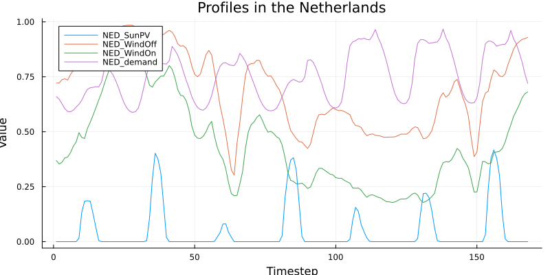
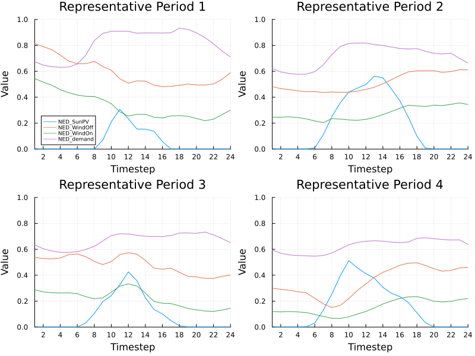
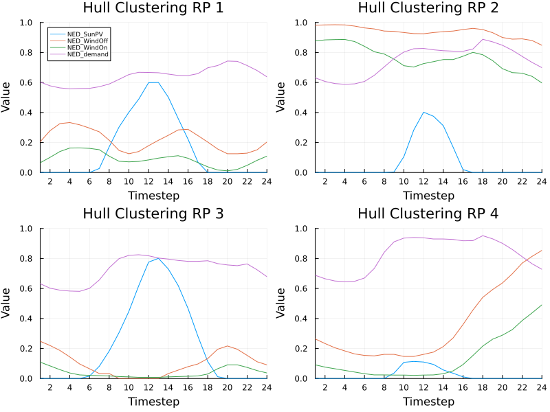

Tutorial
- Getting Started
- Hull Clustering with Blended Representative Periods
- Using Initial Representatives
- Grouping and crossing in practice
- Handling an Incomplete Final Week
- Using a Custom Layout
- Extra Functions in High level API/DuckDB API
- Low level API
Getting Started
Input files
We use DuckDB as the database backend for the input data of the profiles. The input data must be in a long table format with at least the columns year, profile_name, timestep, and value. Extra columns such as scenario are allowed. These defaults values are configurable by passing a ProfilesTableLayout to cluster!. See the Using a Custom Layout section for an example of how to use a custom layout.
For this tutorial we will use the profiles file available in the TulipaClustering repository.
In this example the profiles are in a CSV file, but you can also load them from other sources (e.g., Parquet, Excel, etc.) using DuckDB's readers.
using DataFrames, DuckDB
# change the following path to your file location
profiles_file = joinpath(@__DIR__,"../../test/inputs/EU/profiles.csv")
connection = DBInterface.connect(DuckDB.DB)
DuckDB.query(
connection,
"""
CREATE TABLE profiles AS
SELECT * FROM read_csv('$profiles_file');
""",
)
# helper function to query the DuckDB tables in the connection
nice_query(str) = DuckDB.query(connection, str) |> DataFrame
# show the tables in the connection using the helper function
nice_query("SHOW tables")| Row | name |
|---|---|
| String | |
| 1 | profiles |
And here we can have a look at the first rows of profiles:
nice_query("FROM profiles LIMIT 10")| Row | year | profile_name | timestep | value |
|---|---|---|---|---|
| Int64 | String | Int64 | Float64 | |
| 1 | 2030 | AUS_SunPV | 1 | 0.0 |
| 2 | 2030 | AUS_SunPV | 2 | 0.0 |
| 3 | 2030 | AUS_SunPV | 3 | 0.0 |
| 4 | 2030 | AUS_SunPV | 4 | 0.0 |
| 5 | 2030 | AUS_SunPV | 5 | 0.0 |
| 6 | 2030 | AUS_SunPV | 6 | 0.0 |
| 7 | 2030 | AUS_SunPV | 7 | 0.0 |
| 8 | 2030 | AUS_SunPV | 8 | 0.01 |
| 9 | 2030 | AUS_SunPV | 9 | 0.088 |
| 10 | 2030 | AUS_SunPV | 10 | 0.107 |
Let's explore the first 10 unique profile names in the profiles table:
nice_query("""
SELECT DISTINCT profile_name
FROM profiles
ORDER BY profile_name
LIMIT 10
""")| Row | profile_name |
|---|---|
| String | |
| 1 | AUS_SunPV |
| 2 | AUS_WindOff |
| 3 | AUS_WindOn |
| 4 | AUS_demand |
| 5 | BEL_SunPV |
| 6 | BEL_WindOff |
| 7 | BEL_WindOn |
| 8 | BEL_demand |
| 9 | BLK_SunPV |
| 10 | BLK_WindOff |
And finally, we can use nice_query to filter the profiles and plot them. For example, here we filter and plot the profiles in the Netherlands (i.e., those starting with NED_) and plot only a sample with the profiles for the first week of the year:
using Plots
df = nice_query("""
SELECT *
FROM profiles
WHERE profile_name LIKE 'NED_%'
ORDER BY profile_name, timestep
""")
sample = 1:168
plot(size=(800, 400))
for group in groupby(df, :profile_name)
name = group.profile_name[1]
plot!(group.timestep[sample], group.value[sample], label=name)
end
plot!(xlabel="Timestep", ylabel="Value", title="Profiles in the Netherlands")
Clustering
We can perform the clustering by using the cluster! function by passing the connection with the profiles table and two extra arguments (see Concepts for their deeped meaning):
period_duration: How long are the periods (e.g., 24 for daily periods if the timestep is hourly);num_rps: How many representative periods.
In this example we use the function cluster! with its default parameters. Section Hull Clustering with Blended Representative Periods explains the extra parameters that can be passed to the clustering function.
Finally, it will create new output tables in the DuckDB connection that we will explore in the next section.
After the clustering, four tables will be created in the DuckDB connection:
using TulipaClustering
period_duration = 24
num_rps = 4
clusters = cluster!(connection, period_duration, num_rps)
nice_query("SHOW tables")| Row | name |
|---|---|
| String | |
| 1 | profiles |
| 2 | profiles_rep_periods |
| 3 | rep_periods_data |
| 4 | rep_periods_mapping |
| 5 | timeframe_data |
Output Tables
The output tables are:
profiles_rep_periodscontains the profiles for each RP,
nice_query("FROM profiles_rep_periods LIMIT 5")| Row | rep_period | timestep | year | profile_name | value |
|---|---|---|---|---|---|
| Int64 | Int64 | Int64 | String | Float64 | |
| 1 | 1 | 1 | 2030 | AUS_SunPV | 0.0 |
| 2 | 1 | 2 | 2030 | AUS_SunPV | 0.0 |
| 3 | 1 | 3 | 2030 | AUS_SunPV | 0.0 |
| 4 | 1 | 4 | 2030 | AUS_SunPV | 0.0 |
| 5 | 1 | 5 | 2030 | AUS_SunPV | 0.0 |
rep_periods_datacontains the general informations of the RPs,
nice_query("FROM rep_periods_data")| Row | year | rep_period | num_timesteps | resolution |
|---|---|---|---|---|
| Int64 | Int64 | Int64 | Float64 | |
| 1 | 2030 | 1 | 24 | 1.0 |
| 2 | 2030 | 2 | 24 | 1.0 |
| 3 | 2030 | 3 | 24 | 1.0 |
| 4 | 2030 | 4 | 24 | 1.0 |
rep_periods_mappingcontaints the weights that are use to map the RPs to the original (or base) periods,
nice_query("FROM rep_periods_mapping LIMIT 5")| Row | year | period | rep_period | weight |
|---|---|---|---|---|
| Int64 | Int64 | Int64 | Float64 | |
| 1 | 2030 | 1 | 3 | 1.0 |
| 2 | 2030 | 2 | 1 | 1.0 |
| 3 | 2030 | 3 | 1 | 1.0 |
| 4 | 2030 | 4 | 2 | 1.0 |
| 5 | 2030 | 5 | 1 | 1.0 |
timeframe_datacontains information about the original (or base) periods
nice_query("FROM timeframe_data LIMIT 5")| Row | year | period | num_timesteps |
|---|---|---|---|
| Int64 | Int64 | Int64 | |
| 1 | 2030 | 1 | 24 |
| 2 | 2030 | 2 | 24 |
| 3 | 2030 | 3 | 24 |
| 4 | 2030 | 4 | 24 |
| 5 | 2030 | 5 | 24 |
You can use DuckDB to explore the results using SQL queries or export them to CSV or Parquet files using DuckDB's writers.
For example, we can plot again the profiles in the Netherlands, but this time using the clustered profiles:
df = nice_query("""
SELECT *
FROM profiles_rep_periods
WHERE profile_name LIKE 'NED_%'
ORDER BY profile_name, timestep
""")
rep_periods = unique(df.rep_period)
plots = []
for rp in rep_periods
df_rp = filter(row -> row.rep_period == rp, df)
p = plot(size=(400, 300), title="Representative Period $rp")
for group in groupby(df_rp, :profile_name)
name = group.profile_name[1]
plot!(p, group.timestep, group.value, label=name)
end
show_legend = (rp == rep_periods[1])
plot!(p,
xlabel="Timestep",
ylabel="Value",
xticks=0:2:period_duration,
xlim=(1, period_duration),
ylim=(0, 1),
legend=show_legend ? :bottomleft : false,
legendfontsize=6
)
push!(plots, p)
end
plot(plots..., layout=(2, 2), size=(800, 600))
🎉 Congratulations! You have successfully finished the first part of the tutorial. Now you can continue with more concepts and options in the following sections 😉
Hull Clustering with Blended Representative Periods
The function cluster! has several keyword arguments that can be used to customize the clustering process. Alternatively, you can use the help mode in Julia REPL by typing ?cluster! to see all the available keyword arguments and their descriptions. Here is a summary of the most important keyword arguments for this tutorial:
method(default:k_medoids): clustering method to use:k_means,:k_medoids,:convex_hull,:convex_hull_with_null, or:conical_hull.distance(defaultDistances.Euclidean()): semimetric used to measure distance between data points from the the package Distances.jl.weight_type(default:dirac): the type of weights to find; possible values are::dirac: each period is represented by exactly one representative period (a one unit weight and the rest are zeros):convex: each period is represented as a convex sum of the representative periods (a sum with nonnegative weights adding into one):conical: each period is represented as a conical sum of the representative periods (a sum with nonnegative weights):conical_bounded: each period is represented as a conical sum of the representative periods (a sum with nonnegative weights) with the total weight bounded from above by one.
Algorithm-specific keyword arguments
cluster! accepts two dictionaries for options that belong to the underlying algorithms:
clustering_kwargsis passed to the algorithm selected bymethod.weight_fitting_kwargsis passed to the projected subgradient algorithm that fits the representative-period weights.
The available clustering_kwargs depend on method:
| Keyword | Method | Default | Effect |
|---|---|---|---|
init | :k_means, :k_medoids | :kmpp | Chooses the initial centers or medoids. Use :rand, :kmpp, or a vector of period indices; :k_medoids also accepts :kmcen. Different initialization can produce different representatives. |
maxiter | :k_means, :k_medoids | 100, 200 | Limits the iterations. Increasing it can improve convergence but may take longer. |
tol | :k_means, :k_medoids | 1e-6, 1e-8 | Stops when the objective changes by less than this value. A smaller value can take longer. |
display | :k_means, :k_medoids | :none | Controls progress output from Clustering.jl: :none, :final, or :iter. |
weights | :k_means | nothing | Gives the source periods different importance when calculating cluster centers. |
rng | :k_means | global RNG | Controls random initialization and allows reproducible results. |
heuristic_distance | hull methods | true | Uses the distance to the most recently added point to decide when a cached hull distance can be reused. Set it to false to recompute distances for candidates that pass the cache check; this is slower but disables the heuristic introduced for hull clustering. |
niters | hull methods | 100 | Limits the projected subgradient iterations used to measure distance to the current hull. |
tol | hull methods | 1e-5 | Stops that distance calculation when no component changes by more than this value. |
learning_rate | hull methods | 0.001 | Sets the projected subgradient step size. Larger values move faster but may be less stable. |
adaptive_grad | hull methods | false | Uses an adaptive learning rate when set to true. |
Here, “hull methods” means :convex_hull, :convex_hull_with_null, and :conical_hull. The distance and initial_representatives options are direct keywords of cluster!, so do not repeat them in clustering_kwargs.
The available weight_fitting_kwargs are:
| Keyword | Default | Effect |
|---|---|---|
niters | 100 | Limits the projected subgradient iterations for each source period. |
learning_rate | 0.001 | Sets the step size. Decrease it if fitted weights oscillate; increase it if convergence is stable but slow. |
adaptive_grad | false | Uses an adaptive learning rate when set to true. |
show_progress | false | Displays weight-fitting progress when set to true. |
Weight-fitting tolerance is the top-level tol keyword of cluster!, whose default is 1e-2. In contrast, clustering_kwargs[:tol] controls only the selected clustering algorithm. For example:
clusters = cluster!(
connection,
period_duration,
num_rps;
method = :convex_hull,
weight_type = :convex,
tol = 1e-4,
clustering_kwargs = Dict(
:heuristic_distance => false,
:niters => 200,
:tol => 1e-6,
),
weight_fitting_kwargs = Dict(
:niters => 500,
:learning_rate => 0.0005,
:adaptive_grad => true,
:show_progress => true,
),
)Start with the defaults and tune these options only when runtime, convergence, or the selected representative periods require it.
As you can see, there are several keyword arguments that can be combined to explore different clustering strategies. Our proposed method is the Hull Clustering with Blended Representative Periods, which can be activated by setting the following keyword arguments:
method = :convex_hulldistance = Distances.CosineDist()weight_type = :convex
You can read more about the proposed method in the Concepts section.
So, let's cluster again using the proposed method:
using Distances
clusters = cluster!(connection,
period_duration,
num_rps;
method = :convex_hull,
distance = Distances.CosineDist(),
weight_type = :convex
)
nice_query("SHOW tables")| Row | name |
|---|---|
| String | |
| 1 | profiles |
| 2 | profiles_rep_periods |
| 3 | rep_periods_data |
| 4 | rep_periods_mapping |
| 5 | timeframe_data |
As you can see, the output tables names are the same as before, but the results will be different. You can explore the results again using SQL queries or export them to CSV or Parquet files using DuckDB's writers.
Let's plot again the profiles in the Netherlands, but this time using the clustered profiles with the hull clustering method:
df = nice_query("""
SELECT *
FROM profiles_rep_periods
WHERE profile_name LIKE 'NED_%'
ORDER BY profile_name, timestep
""")
rep_periods = unique(df.rep_period)
plots = []
for rp in rep_periods
df_rp = filter(row -> row.rep_period == rp, df)
p = plot(size=(400, 300), title="Hull Clustering RP $rp")
for group in groupby(df_rp, :profile_name)
name = group.profile_name[1]
plot!(p, group.timestep, group.value, label=name)
end
show_legend = (rp == rep_periods[1])
plot!(p,
xlabel="Timestep",
ylabel="Value",
xticks=0:2:period_duration,
xlim=(1, period_duration),
ylim=(0, 1),
legend=show_legend ? :topleft : false,
legendfontsize=6
)
push!(plots, p)
end
plot(plots..., layout=(2, 2), size=(800, 600))
The first difference you may notice is that the representative periods (RPs) obtained with hull clustering are more extreme than those obtained with the default method. This is because hull clustering selects RPs that are more likely to be constraint-binding in an optimization model.
For more details on the comparison of clustering methods please refer to the Scientific References section.
Using Initial Representatives
Use initial_representatives when a known period must be included in the output, for example a period containing an extreme demand or low-renewable event. The value is a DataFrame with the same columns as the input profiles table plus a period column.
The following example forces day 30 of the input data to be one of the four representative periods. Its original timesteps are converted back to 1:period_duration because every representative period must use local timestep numbers:
forced_day = 30
first_timestep = (forced_day - 1) * period_duration + 1
last_timestep = forced_day * period_duration
initial_representatives = nice_query("""
SELECT
1 AS period,
timestep - $(first_timestep - 1) AS timestep,
year,
profile_name,
value
FROM profiles
WHERE timestep BETWEEN $first_timestep AND $last_timestep
ORDER BY profile_name, timestep
""")
first(initial_representatives, 5)| Row | period | timestep | year | profile_name | value |
|---|---|---|---|---|---|
| Int32 | Int64 | Int64 | String | Float64 | |
| 1 | 1 | 1 | 2030 | AUS_SunPV | 0.0 |
| 2 | 1 | 2 | 2030 | AUS_SunPV | 0.0 |
| 3 | 1 | 3 | 2030 | AUS_SunPV | 0.0 |
| 4 | 1 | 4 | 2030 | AUS_SunPV | 0.0 |
| 5 | 1 | 5 | 2030 | AUS_SunPV | 0.0 |
Pass the dataframe directly to cluster!. The requested num_rps is the total number of representative periods, including the supplied one:
clusters = cluster!(
connection,
period_duration,
num_rps;
method = :k_medoids,
initial_representatives,
)
# With k-means and k-medoids, supplied representatives are placed last.
nice_query("""
SELECT *
FROM profiles_rep_periods
WHERE rep_period = $num_rps
ORDER BY profile_name, timestep
LIMIT 5
""")| Row | rep_period | timestep | year | profile_name | value |
|---|---|---|---|---|---|
| Int64 | Int64 | Int64 | String | Float64 | |
| 1 | 4 | 1 | 2030 | AUS_SunPV | 0.0 |
| 2 | 4 | 2 | 2030 | AUS_SunPV | 0.0 |
| 3 | 4 | 3 | 2030 | AUS_SunPV | 0.0 |
| 4 | 4 | 4 | 2030 | AUS_SunPV | 0.0 |
| 5 | 4 | 5 | 2030 | AUS_SunPV | 0.0 |
The input must satisfy these requirements:
- Include every column from the input
profilestable and theperiodcolumn. Keep them in the post-splitting order:period,timestep, and then the remaining input columns in their original order. This includes all grouping and cross-by columns configured inProfilesTableLayout. - Include every profile and other key combination present in the corresponding clustering group. Selecting only the demand profile, for example, is not sufficient if the input also contains availability profiles.
- Number supplied periods from
1and give every period exactlyperiod_durationtimesteps numbered from1. - Supply no more than
num_rpsperiods. If an incomplete final period is retained as its own representative, it also occupies one of thenum_rpsplaces.
For :k_means and :k_medoids, TulipaClustering finds the remaining representatives first and appends the supplied periods afterward. For the hull methods, it starts the hull with the supplied periods, so they influence which additional points are selected and appear first in the output. In either case a supplied representative is guaranteed to appear, but it can receive zero weight if no source period is closest to it.
When clustering separate groups, such as several years, the period numbering is local to each group. You may provide initial representatives for only some groups. When using cols_to_crossby, however, provide the complete set of crossed values for every group that has initial representatives.
Grouping and crossing in practice
TulipaClustering.jl clusters each cols_to_groupby combination independently and pools periods across the values in cols_to_crossby. The following example uses both: one clustering problem per year and one shared representative-period set across scenarios within that year.
First, create two scenarios from the tutorial profiles. Real input can already contain these columns; this duplication only makes the example self-contained.
DuckDB.query(
connection,
"""
CREATE OR REPLACE TABLE scenario_profiles AS
SELECT
p.year,
s.scenario,
p.profile_name,
p.timestep,
p.value * s.scale AS value
FROM profiles AS p
CROSS JOIN (VALUES ('low', 0.9), ('high', 1.1)) AS s(scenario, scale)
""",
)
nice_query("""
SELECT year, scenario, COUNT(*) AS rows
FROM scenario_profiles
GROUP BY year, scenario
ORDER BY year, scenario
""")| Row | year | scenario | rows |
|---|---|---|---|
| Int64 | String | Int64 | |
| 1 | 2030 | high | 700800 |
| 2 | 2030 | low | 700800 |
Assign year to cols_to_groupby and scenario to cols_to_crossby. A column cannot appear in both lists.
cross_scenario_layout = TulipaClustering.ProfilesTableLayout(;
cols_to_groupby = [:year],
cols_to_crossby = [:scenario],
)
clusters = cluster!(
connection,
period_duration,
num_rps;
input_profile_table_name = "scenario_profiles",
layout = cross_scenario_layout,
)Dict{DataFrames.GroupKey{DataFrames.GroupedDataFrame{DataFrames.DataFrame}}, TulipaClustering.ClusteringResult} with 1 entry:
GroupKey: (year = 2030,) => ClusteringResult(7680×5 DataFrame…There is one result in clusters for every year, and each result contains exactly num_rps representatives. The scenario column is absent from profiles_rep_periods because the representatives are shared across scenarios:
nice_query("""
SELECT year, COUNT(*) AS representative_periods
FROM rep_periods_data
GROUP BY year
ORDER BY year
""")| Row | year | representative_periods |
|---|---|---|
| Int64 | Int64 | |
| 1 | 2030 | 4 |
nice_query("FROM profiles_rep_periods LIMIT 5")| Row | rep_period | timestep | year | profile_name | value |
|---|---|---|---|---|---|
| Int64 | Int64 | Int64 | String | Float64 | |
| 1 | 1 | 1 | 2030 | AUS_SunPV | 0.0 |
| 2 | 1 | 2 | 2030 | AUS_SunPV | 0.0 |
| 3 | 1 | 3 | 2030 | AUS_SunPV | 0.0 |
| 4 | 1 | 4 | 2030 | AUS_SunPV | 0.0 |
| 5 | 1 | 5 | 2030 | AUS_SunPV | 0.0 |
The rep_periods_mapping table retains scenario, allowing every original scenario-period pair to map independently to the shared representatives:
nice_query("""
FROM rep_periods_mapping
ORDER BY year, scenario, period, rep_period
LIMIT 10
""")| Row | year | period | rep_period | weight | scenario |
|---|---|---|---|---|---|
| Int64 | Int64 | Int64 | Float64 | String | |
| 1 | 2030 | 1 | 2 | 1.0 | high |
| 2 | 2030 | 2 | 2 | 1.0 | high |
| 3 | 2030 | 3 | 2 | 1.0 | high |
| 4 | 2030 | 4 | 2 | 1.0 | high |
| 5 | 2030 | 5 | 2 | 1.0 | high |
| 6 | 2030 | 6 | 2 | 1.0 | high |
| 7 | 2030 | 7 | 2 | 1.0 | high |
| 8 | 2030 | 8 | 2 | 1.0 | high |
| 9 | 2030 | 9 | 2 | 1.0 | high |
| 10 | 2030 | 10 | 2 | 1.0 | high |
To obtain a separate set for each scenario instead, move scenario from cols_to_crossby to cols_to_groupby:
per_scenario_layout = TulipaClustering.ProfilesTableLayout(;
cols_to_groupby = [:year, :scenario],
cols_to_crossby = [],
)This produces num_rps * number_of_scenarios representatives per year and retains scenario in the representative-profile tables. See Grouping and Crossing Columns for the conceptual differences, including what happens when scenario is placed in neither list.
Handling an Incomplete Final Week
When the input uses hourly timesteps, one week contains 168 hours:
period_duration = 7 * 24 # 168 hoursA 365-day year contains 8,760 hours. This is not an exact number of weeks:
\[8760 = 52 \times 168 + 24\]
The data therefore contains 52 complete weeks and a final period with only 24 hours. The drop_incomplete_last_period keyword controls what happens to that final period.
- With the default
drop_incomplete_last_period = false, the final 24 hours are kept as a special, shorter representative period. If you request eight representative periods, one is reserved for this shorter period and the other seven represent the complete weeks. - With
drop_incomplete_last_period = true, the final 24 hours are removed before clustering. All eight requested representative periods can then represent complete 168-hour weeks. The weights of the complete periods are increased by8760 / (52 * 168) ≈ 1.00275so that they also account for the dropped hours.
Dropping the final period is useful when the model that consumes the clustering results requires every representative period to have the same duration. It also makes the output smaller: timeframe_data and rep_periods_mapping contain 52 base periods instead of 53, and every row in rep_periods_data has num_timesteps = 168.
However, the original values in those final 24 hours are no longer used to choose the representative periods. Do not drop the period if it contains an important event, such as an extreme demand peak or low-renewable interval, that must be preserved exactly. Also be aware that the slightly larger weights preserve the total represented duration, but they cannot reproduce the exact shape of the dropped hours.
Per-scenario clustering
Use cols_to_groupby when each scenario should have its own representative periods:
period_duration = 168
num_rps = 8
per_scenario_layout = TulipaClustering.ProfilesTableLayout(;
cols_to_groupby = [:year, :scenario],
cols_to_crossby = [],
)
per_scenario_clusters = cluster!(
connection,
period_duration,
num_rps;
layout = per_scenario_layout,
drop_incomplete_last_period = true,
)Here, the last incomplete week is handled separately for every year-scenario group. For a 365-day year, each scenario keeps 52 complete weeks and receives its own weight adjustment. Each scenario also gets its own set of num_rps representative periods, so the total number of representative periods grows with the number of scenarios.
Cross-scenario clustering
Use cols_to_crossby when scenarios should share one set of representative periods:
period_duration = 168
num_rps = 8
cross_scenario_layout = TulipaClustering.ProfilesTableLayout(;
cols_to_groupby = [:year],
cols_to_crossby = [:scenario],
)
cross_scenario_clusters = cluster!(
connection,
period_duration,
num_rps;
layout = cross_scenario_layout,
drop_incomplete_last_period = true,
)In this case, TulipaClustering removes the incomplete final week from each scenario before combining their complete weeks for clustering. The scenarios share the same num_rps representative periods, while rep_periods_mapping still records the mapping and weight for each scenario. Weight adjustments are calculated separately, so scenarios with different final-period lengths receive the appropriate adjustment.
The practical differences are:
| Per scenario | Cross scenario | |
|---|---|---|
| Representative periods | A separate set for every scenario | One shared set across scenarios |
Incomplete period with true | Dropped independently from each scenario group | Dropped from each scenario before their data is combined |
| Weight adjustment | Calculated inside each scenario group | Calculated separately for each crossed scenario |
| Number of representative periods per year | num_rps * number_of_scenarios | num_rps |
Every year-scenario series must contain at least 168 hours when drop_incomplete_last_period = true. TulipaClustering raises an error rather than dropping all the data from a group that contains only an incomplete week.
Using a Custom Layout
Let's say that you have a table that uses different names for the columns of your data. For example, let's rename the column timestep to hour in the profiles table.
DuckDB.query(
connection,
"ALTER TABLE profiles
RENAME COLUMN timestep to hour;
",
)
nice_query("FROM profiles LIMIT 10")| Row | year | profile_name | hour | value |
|---|---|---|---|---|
| Int64 | String | Int64 | Float64 | |
| 1 | 2030 | AUS_SunPV | 1 | 0.0 |
| 2 | 2030 | AUS_SunPV | 2 | 0.0 |
| 3 | 2030 | AUS_SunPV | 3 | 0.0 |
| 4 | 2030 | AUS_SunPV | 4 | 0.0 |
| 5 | 2030 | AUS_SunPV | 5 | 0.0 |
| 6 | 2030 | AUS_SunPV | 6 | 0.0 |
| 7 | 2030 | AUS_SunPV | 7 | 0.0 |
| 8 | 2030 | AUS_SunPV | 8 | 0.01 |
| 9 | 2030 | AUS_SunPV | 9 | 0.088 |
| 10 | 2030 | AUS_SunPV | 10 | 0.107 |
In this case, you can use the custom column name by passing a ProfilesTableLayout to cluster!.
The layout names will also be preserved in the output tables. Below we cluster again, but ask passing the information to use hour instead of the default timestep:
layout = TulipaClustering.ProfilesTableLayout(; timestep = :hour)
clusters = cluster!(connection, period_duration, num_rps; layout)
nice_query("FROM profiles_rep_periods LIMIT 10")| Row | rep_period | hour | year | profile_name | value |
|---|---|---|---|---|---|
| Int64 | Int64 | Int64 | String | Float64 | |
| 1 | 1 | 1 | 2030 | AUS_SunPV | 0.0 |
| 2 | 1 | 2 | 2030 | AUS_SunPV | 0.0 |
| 3 | 1 | 3 | 2030 | AUS_SunPV | 0.0 |
| 4 | 1 | 4 | 2030 | AUS_SunPV | 0.0 |
| 5 | 1 | 5 | 2030 | AUS_SunPV | 0.0 |
| 6 | 1 | 6 | 2030 | AUS_SunPV | 0.0 |
| 7 | 1 | 7 | 2030 | AUS_SunPV | 0.025 |
| 8 | 1 | 8 | 2030 | AUS_SunPV | 0.132 |
| 9 | 1 | 9 | 2030 | AUS_SunPV | 0.225 |
| 10 | 1 | 10 | 2030 | AUS_SunPV | 0.307 |
Notice the column hour in the output above (instead of timestep).
Extra Functions in High level API/DuckDB API
The high-level API of TulipaClustering focuses on using TulipaClustering as part of the Tulipa workflow. This API consists of three main functions: cluster!, transform_wide_to_long!, and dummy_cluster!. These functions are designed to work with DuckDB connections and tables, making it easy to integrate clustering into your data processing pipeline. In the previous sections, we have already covered the usage of cluster! and transform_wide_to_long!. In this section, we will explore the third function, dummy_cluster!, which is useful for testing, debugging, and to prepare the data for TulipaEnergyModel without actually clustering the profiles.
Dummy Clustering
A dummy cluster will essentially ignore the clustering, but it will create the necessary tables that are often used for the next steps in the Tulipa workflow.
clusters = dummy_cluster!(connection; layout)
nice_query("FROM rep_periods_data LIMIT 10")| Row | year | rep_period | num_timesteps | resolution |
|---|---|---|---|---|
| Int64 | Int64 | Int64 | Float64 | |
| 1 | 2030 | 1 | 8760 | 1.0 |
In this case the function created a single representative period for all the data.
Notice that we passed the layout argument to dummy_cluster! to ensure that the output tables have the correct column names, since we renamed the timestep column to hour in the previous section.
Transform a wide profiles table into a long table
The long table format is a requirement of TulipaClustering, even for the dummy clustering example.
A long table is a table where the profile names are stacked in a column with the corresponding values in a separate column. However, sometimes the input data is in a wide format, i.e., each profile is in a separate column.
In those cases, you can use the function transform_wide_to_long! to transform a wide table into a long table. You need to provide the connection to DuckDB, the name of the source table (the wide table) and the name of the target table (the long table that will be created).
Low level API
The cluster! function is a wrapper around the low-level clustering functions. It simplifies the process of clustering by handling the creation of temporary tables and managing the clustering workflow.
However, if you want to have more control over the clustering process, you can use the low-level functions directly. The low-level API consists of the following functions:
split_into_periods!: Splits the profiles into periods based on the specified period duration.find_representative_periods: Finds the representative periods using the specified clustering method.fit_rep_period_weights!: Fits the weights for the representative periods to map them to the original periods.
At the end of the clustering process, you will get a TulipaClustering.ClusteringResult struct that contains the detailed results of the clustering process:
profilesis a dataframe with profiles for RPs,weight_matrixis a matrix of weights of RPs in blended periods,clustering_matrixandrp_matrixare matrices of profile data for each base and representative period (useful to keep for the next step, but you should not need these unless you want to do some extra math here)auxiliary_datacontains some extra data that was generated during the clustering process and is generally not interesting to the user who is not planning to interact with the clustering method on a very low level. For example, if you use thek-medoidsmethod, theauxiliary_datawill contain the indices of the medoids in the original data.
So, although we recommend using the high-level API for most use cases, you can use the low-level functions if you need more control over the clustering process.